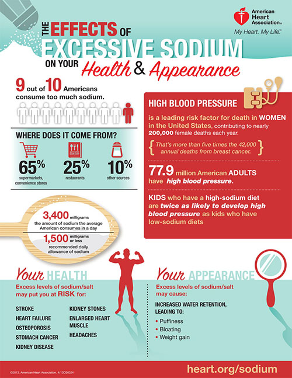
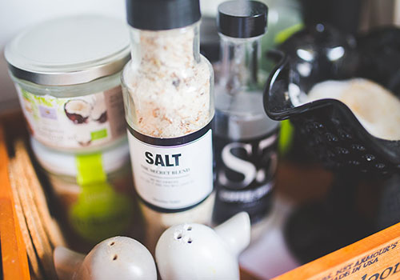
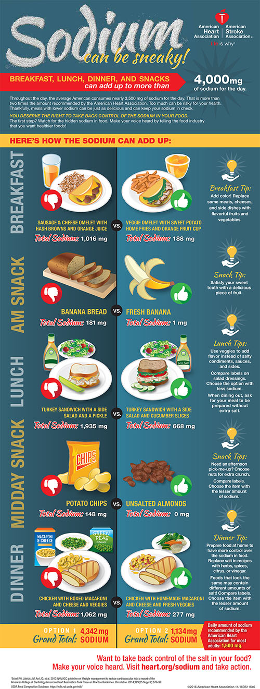

What is sodium to my body?
Sodium is a mineral that’s essential for life. It’s regulated in the body by your kidneys, and it helps control your body’s fluid balance. It also helps send nerve impulses and affects muscle function.

How does sodium affect my heart health?
When there’s extra sodium in your bloodstream, it pulls water into your blood vessels, increasing the total amount (volume) of blood inside your blood vessels. With more blood flowing through your blood vessels, blood pressure increases. It’s like turning up the water supply to a garden hose — the pressure in the hose increases as more water is blasted through it. Over time, high blood pressure may overstretch or injure the blood vessel walls and speed the build-up of gunky plaque that can block blood flow. The added pressure also tires out the heart by forcing it to work harder to pump blood through the body.
Here’s the scoop on high blood pressure, also known as the “silent killer” because its symptoms are not always obvious:
- It’s one of the major risk factors for heart disease, the No. 1 killer worldwide.
- It’s the leading risk factor of women’s deaths in the U.S., and the second leading risk factor for death for men.
- One-third of American adults have high blood pressure. And 90 percent of American adults are expected to develop high blood pressure over their lifetimes.
- More than 40 percent of non-Hispanic black adults have high blood pressure. Not only is high blood pressure more prevalent in blacks than whites, but it also develops earlier in life.
Even if you don’t have high blood pressure, eating less sodium can help blunt the rise in blood pressure that occurs with age, and reduce your risk of heart attack, heart failure, stroke, kidney disease, osteoporosis, stomach cancer and even headaches. The extra water in your body can also lead to bloating and weight gain.

How much sodium is in salt?
Table salt is a combination of two minerals – sodium and chloride. By weight, table salt is approximately 40% sodium and 60% chloride. About 90% of Americans’ sodium intake comes from sodium chloride. More than 75 percent of the sodium Americans eat comes from some processed, prepackaged and restaurant foods – not from the salt shaker.
Here are the approximate amounts of sodium in a given amount of table salt:
- 1/4 teaspoon salt = 575 mg sodium
- 1/2 teaspoon salt = 1,150 mg sodium
- 3/4 teaspoon salt = 1,725 mg sodium
- 1 teaspoon salt = 2,300 mg sodium

What are the common sources of sodium?
More than 70% of the sodium we consume comes from packaged, prepared and restaurant foods. The rest of the sodium in our diets occurs naturally in food (about 15 percent) or is added by us when we’re cooking food or sitting down to eat.
The latter only makes up only about 11 percent of our total sodium intake, so even if you never use the salt shaker, you’re probably getting too much sodium.
Because most of the sodium we eat is in our food before we buy it, it makes it hard for people to limit how much sodium they are eating. Americans deserve the opportunity to choose how much sodium they are eating. An AHA survey found that 75% of adults in the U.S. preferred less sodium in processed and restaurant foods. Learn about the sources of sodium in the American diet and food supply.
For Americans age 18 and over, watch for the salty six; the top sodium sources in the U.S. diet in adults, and kids.
What are the benefits of cutting down on sodium?
Along with reducing your risk for high blood pressure, bloating and other effects of too much sodium, cutting sodium might save money:
- One estimate suggested that if Americans moved to an average intake of 1,500 mg/day sodium, it could result in a 25.6 percent overall decrease in blood pressure and an estimated $26.2 billion in health care savings.
- Another estimate projected that achieving this goal would reduce deaths from cardiovascular disease by anywhere from 500,000 to nearly 1.2 million over the next 10 years.
Is it true that some research questions the connection between sodium and health problems, suggesting that sodium isn’t so bad?
The science behind sodium reduction is clear. Robust evidence has linked excess sodium intake with high blood pressure, which increases the risk of heart attack, stroke, and heart failure.
Some newer research questions the link between sodium consumption and health problems, but the connection is well-established and Americans should still be cutting back on salt. The newer research adds to a larger discussion that has evolved over the last few years about appropriate levels of salt intake and its impact.
Much of the research that questions sodium intake and health problems relies on flawed data, such as inaccurate measurements of sodium intake and an overemphasis on studying sick people rather than the general population. Often, the studies with paradoxical findings are poorly designed to examine the relationship between sodium intake and the health outcome of interest.The American Heart Association published a Science Advisory in February 2014 that discussed the problems with many of the studies that question how sodium is related to heart disease.
It’s important to remember that new studies become just one part of decades of evidence on this topic. When considering that evidence as a whole, it is clear that a significant body of research reinforces the link between sodium intake and heart health.